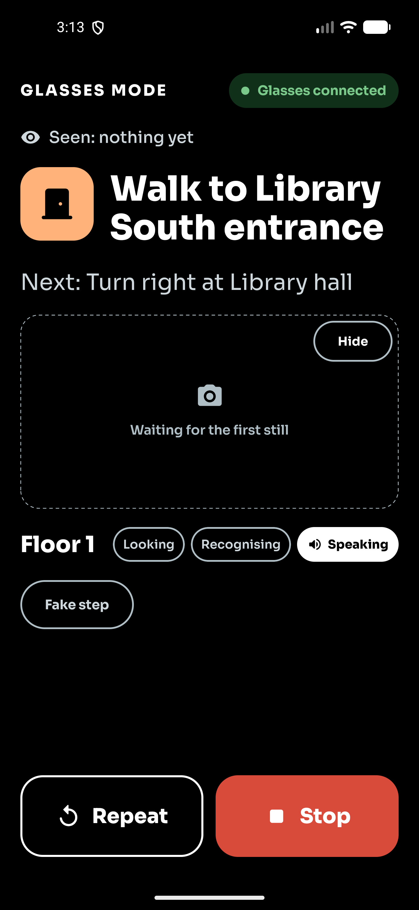

Walk to any room on campus. The arrows come to you.
HackGT 13 · The Lighthouse Laboratory (Immersive) · Uyiosa Nehikhuere & Raphael Omorose
The problem
Finding the room is the hard part.
Buildings are confusing. Hallways that look connected aren't. Maps stop at the door, and there is usually a faster way in than the one you took.
The app
Pick a campus. Pick a building. Say where.
Georgia Tech and Georgia State, each with its own look. Three buildings mapped so far; the rest are one survey walk away.
How it works
Pick a room. Walk. Hands-free if you want.
The phone does all the thinking, offline. The glasses and the watch just tell you where to go.
Surveyed on foot
Every building is a graph we measured ourselves.
1.36 m/s
measured walking speed
Classroom South
Three floors, five doors, one elevator that waits 3 s.
stairs 21.6 s / floor up · 17.9 s down
elevator 3.1 s wait · 12.4 s / floor
floor from the barometer
Routing that thinks
Doors, hours, stairs versus elevator, PantherCard.
Localisation
GPS to the door. Signs, compass and barometer to the room.
On the phone
Metre-wide arrows on the floor.
An amber arrow at the turn.
- ARCore + SceneView, on-devicearrows anchored to the real floor
- Reroutes when you drift"Heads up: rerouting via the stairs"
- Tells you when you're there"Room 608 is on your right."
Hands-free
Look, then listen.
- Ray-Ban Meta Gen 2 camera bursts2–3 stills in ~2 s, then speech — camera and mic never overlap
- Sign OCR + image anchors on the phoneML Kit, everything offline
- Voice cached per sentenceElevenLabs, phone TTS as fallback

Recognising · KL-A03
On the wrist
The watch buzzes each turn. You never look down.
Every step reaches the Galaxy Watch within a second. Each step type has its own rhythm.
Where it stands
Built, tested on device, ready for more buildings.
Works today
- 3 buildings surveyed: Klaus, Classroom South, Student Center East
- Time-aware routing, 45 core tests
- Phone AR guidance + reroute
- Watch arrows and haptics
- Glasses loop: look, recognise, speak
- Core 45 tests · app 41 · watch 4, all on device
Next
- Class-schedule sync: "take me to my 2 PM"
- Crowd-sourced anchors and shortcuts
- More buildings, a university pilot
Come walk with it.
Phone, glasses and watch are at the table. Pick any room in Klaus and we'll take you there.